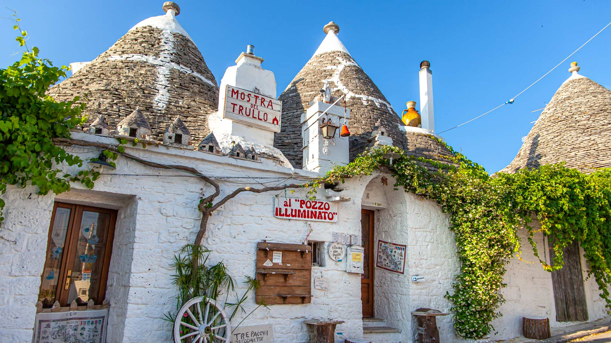

Why Apulia?
Apulia is beautiful
It is the least mountainous Italian region, mostly occupied by plains and hills, apart from some lower mountains of the Southern Apennine chain and the Gargano promontory, with high, steep cliffs. Half of its territory being flat, and occupied by a wide plain, called Tavoliere delle Puglie, the second largest in Italy, and some smaller plains as Terra di Bari and Pianura Salentina.